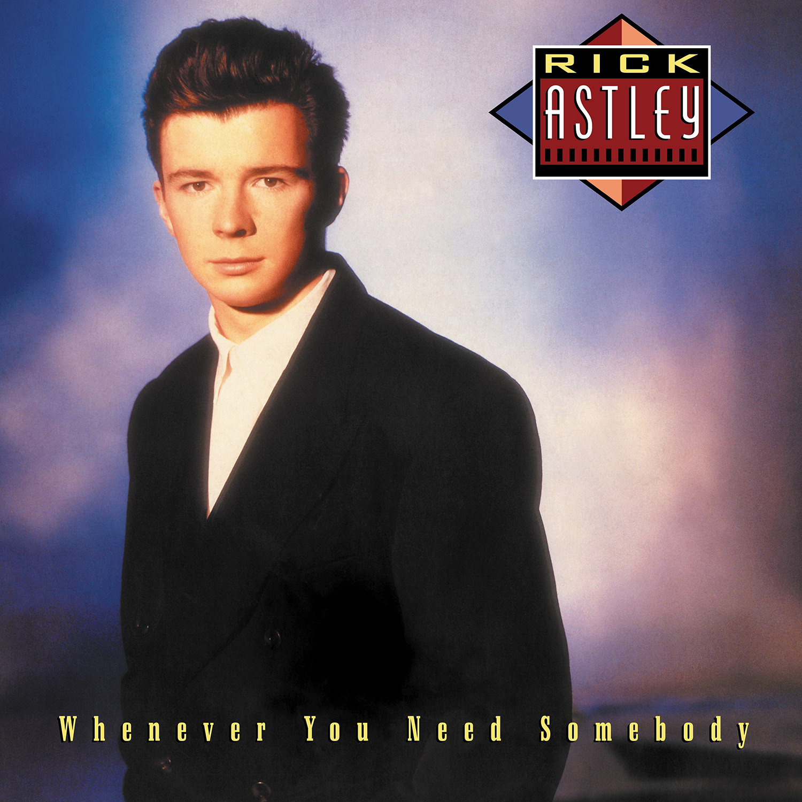

Vinyl Review

Whenever You Need Somebody
Metallica
As a dedicated music aficionado, I was thrilled to revisit Rick Astley's debut album, "Whenever You Need
Somebody," on vinyl. Released in 1987, this pop classic introduced the world to Astley's soulful voice and
catchy tunes. Produced by the legendary production trio Stock Aitken Waterman, the album features a blend of
infectious dance-pop tracks and heartfelt ballads that showcase Astley's distinctive vocal talent and
charisma.
"Whenever You Need Somebody" kicks off with the iconic "Never Gonna Give You Up," a track that has become
synonymous with Astley's name and has enjoyed a resurgence in popularity thanks to the internet phenomenon
known as "Rickrolling." The song's catchy melody, driving beat, and Astley's smooth, confident vocals make
it an unforgettable pop anthem that continues to resonate with listeners more than three decades after its
release.
Another standout track is the album's title song, "Whenever You Need Somebody." This upbeat dance-pop tune
features a catchy chorus, uplifting lyrics, and Astley's soulful vocal performance. The energetic, feel-good
vibe of the track makes it a memorable and enduring addition to the album.
"Together Forever," another dance-pop gem on the album, showcases Astley's ability to create infectious
tunes that are perfect for the dancefloor. The track's driving beat, catchy chorus, and Astley's passionate
vocals make it an irresistible and timeless pop hit.
On the more introspective side, "When I Fall in Love," a cover of the classic ballad, highlights Astley's
versatility and his ability to convey deep emotion through his powerful voice. The song's lush orchestration
and Astley's heartfelt vocal performance make it a standout moment on the album.
The vinyl edition of "Whenever You Need Somebody" offers a warm, authentic listening experience that brings
out the best in the album's catchy tunes and Astley's distinctive voice. The depth and richness of the
analog format enhance the album's dance-pop tracks and heartfelt ballads, making it a must-have for fans and
collectors of '80s pop music.
Final Verdict: "Whenever You Need Somebody" is a pop classic that showcases Rick Astley's unique
vocal talent and his ability to create timeless, infectious tunes. The vinyl edition provides an authentic
and enhanced listening experience that highlights the album's catchy dance-pop tracks and heartfelt ballads,
making it a must-listen for fans of '80s pop music and Rick Astley enthusiasts alike.
Did you enjoy my review of this album? Check out one of my favorite album reviews below or see a
list of my reviews!
More importantly, I'm always looking for new music to enjoy. Let
me know what you're currently listening to!
My Favorites
Read why these albums are my all-time favorites!